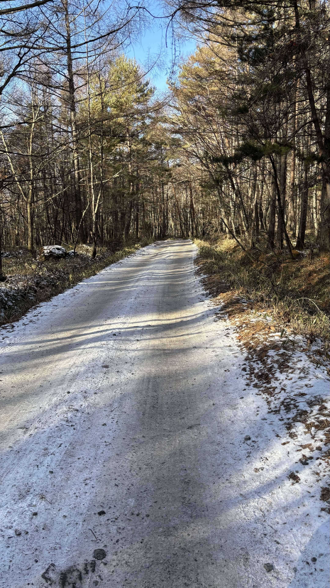
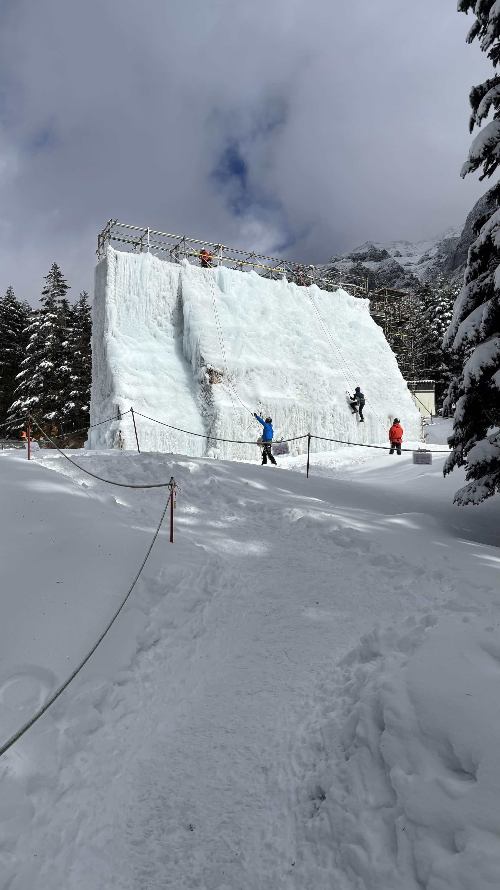
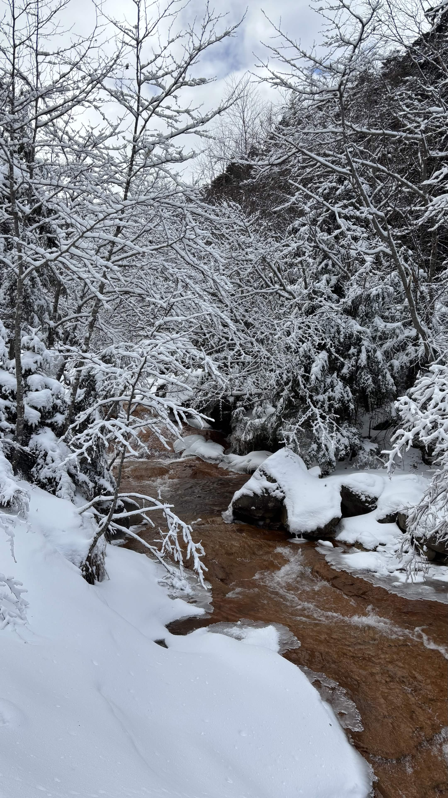

| 日程 | 2025年12月31日（到着） |
|---|---|
| メンバー | ソロ（なし） |
| 難易度（俺流10段階） | 技術力 1 / 体力度 2 |
| アクセスコース目安 |
・美濃戸口登山口 → 赤岳山荘：約1時間 ・赤岳山荘 → 赤岳鉱泉：約2時間 |

自分自身にとって「初めての年末登山」。厳しい冬の八ヶ岳に身を置く、忘れられない試練の登山となりました。

赤岳登頂失敗という悔しい結果となりましたが、厳冬期登山の難しさ、装備選びや防寒・保温の重要性を痛感する貴重な経験となりました。今回得た反省や学びをこれからの登山にしっかりと活かし、ギアや対策を万全にして必ずリベンジしたいと思います！
← HOMEへ戻る